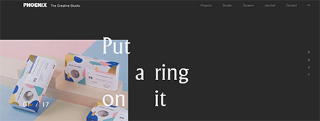
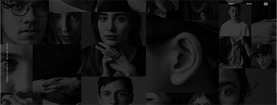
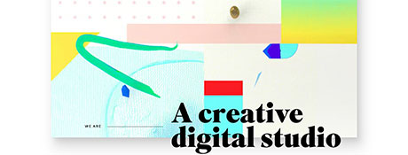
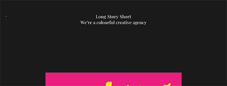

Site Goal(s): Phoenix is a digital and branding studio professing to have the visual and interactive solutions to step up your game and they are trying to sell their services.
Target Audience: The target audience would be anyone or business who needs graphic design, photography, web design, web development, video or etcetera.
Navigation: This site has 5 menu options across the upper right of the page, they do not drop down, but when you click on it, a list appears on the right hand side to choose a subtopic. If you don’t choose a subtopic, you can just scroll down to view it all eventually. Also down the right hand side they have abbreviations for social media that you can click on to go to those pages, separate from their site. The navigation elements are text. When you go to the pages in the menu at the top, the name of the page does match the name of the page you go to. Also, when you are on, for instance, the “Projects” page, the menu item also has a line through it so you can look there to know where you are at too. I did not like the line through the word though, it was not super obvious at first that it meant that’s where you are, it looks crossed out with a line through it, like an error.
Usability Issues (Ease of Use): I think the site is a little confusing when you encounter the design for the first time. Once I clicked around and figured out the navigation, you can perform tasks fairly quickly. There were no errors, however, I did not like using this design. I think they had too much going on.
Content: After digging around, you can figure out the purpose of the website, who they are and what they do.
Design/Layout: Plenty of photos and animation are used on this site, but I felt there was too much going on. The photos they had under “Projects” were OK but there were no descriptions of what the project was. The site colors are black, gray and white with full color photos. While the color scheme was fine, I did not like the layout and I don’t think it was balanced well with the left side being heavy with all the information.

Site Goal(s): They are inviting you to discover 100+ rising creatives while also asking you to get lost in the site. I feel that they are promoting the iconic photographer who took the photos and the design agency who designed the site and I feel they are trying to entertain you. Since the only verbiage about the young creatives are things like “future photographer” then no way to view a portfolio or contact them, I feel this website is pretty much supposed to be a work of art for your enjoyment.
Target Audience: I think the target audience would be artists, photographers and web designers.
Navigation: The navigation is simple with one way to enter the site then you have a menu in the upper right corner with 3 drop downs. You can go to the “Wall” where there are random pictures of people to click on, you can go to “About” where you have one page to read about this site, then you have an option to Share the site. As you move your curser over the images they brighten a bit and there is a sound when you move your cursor over images and words. Once you’re on the wall of photos, you can navigate up and down or side to side, it almost seems endless. It is a simple site and the page names do not change as you change the pages.
Usability Issues (Ease of Use): This site is easy to use and you can move through it quickly. I do believe it is memorable. I did not find errors. It is a pleasant design to use.
Content: It was well written and I did not notice any typos. It was interesting and entertaining, though I would not say it was informative, since it did not have any information about the featured designers or how to contact them. That’s how I discovered that they were not promoting these designers, they were showcasing their site design and photography. That’s not what I expected when I first entered the site.
Design/Layout: The site is simple but interesting. It was all shades of black and white, including background, photos, links and text. The body copy was gray with any text they wanted to emphasize being white. It all contrasted well and there was a good balance and repetition of the photos. It flowed very well.

Site Goal(s): Upperquad shares their creative capabilities with potential clients. They claim to build digital brands, products and experiences that represent you and tell your story. They are also looking for creative, curious, friendly, talented people to join their team.
Target Audience: The target audience of this site would include companies looking for creative services as well as creative people who are looking to join their team. The site is very colorful and fun so I feel they would attract colorful and fun future employees and clients.
Navigation: There is one “About” menu item in the upper right hand corner. When you click on the “About” menu, there are 3 areas you can go to that pop up on the left hand side of the screen, “Studio”, “Work” and “Careers”. The navigation elements are text. When you toggle over the text, it changes from the serif font to a simple sans serif font. The name of the page does change to “About” when you click on that. Then on the 3 items on the left, it stays “About” when you are on “Studio”, then the page name changes to match what page you are on with “Work” and “Careers”. The names of the pages also appear on the page you are on.
Usability Issues (Ease of Use): I think this site is easy to use when you first encounter the design. It’s very simple. There are not a lot of options to choose from yet there is all you need. One can work efficiently and reestablish proficiency easily, I encountered no errors.
Content: The content was well written and free from typos that I could see. It was informative to what they are all about, but it was not too wordy, it was just enough.
Design/Layout: This site is fun, it seems retro to me, feeling a little bit like the 80’s or early 90’s with the color blocks. It also looks like they are using the classic graphic design font that I remember, Adobe Garamond, or something similar. The site has a good flow. There is a good balance of photos, type and animation throughout the site and it was done consistently. It maintained a clean white background, color photos, color blocks that contain copy, with all black text.

Site Goal(s): This is another studio trying to sell their creative services.
Target Audience: The target audience are going to be potential clients, but also for the clients that they already have because they have a client login section.
Navigation: They have one menu in the upper left hand side of the home page. It opens up a white box with 6 menu items to choose from. Then in smaller print under the primary menu items, they have a client login, an option to follow them and terms. The navigation elements are text. If you don’t choose to go to the menu and visit an item there, you can scroll down to get some basic information about them as well. Page names do change to match the page you navigated to. The primary topic pages contain links to subtopic pages, for example, “Services” takes you to more topics such as “Branding”, “Art Direction”, “Packaging” and etcetera. These subtopics are also added to the name of the page. Then you have the option of going to the next subhead from that page if you want.
Usability Issues (Ease of Use): It’s fairly simple to accomplish basic tasks on this site and it moves pretty quickly. It would not be an issue to reestablish proficiency. I did not get any errors while on the site and this design is simple and pleasant to use.
Content: The content is well written and has a brief description next to project pictures of what you’re looking at which is helpful. It is informative and they write with personality. They close with a way to reach out by phone or email.
Design/Layout: Each page is either black or white with white or black serif text. On the black pages they have words in yellow that need to be highlighted. The contrast of the pages and type are nice and I like how the home page is not complicated. The site is well balanced and flows well.